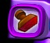

Teaching Point:
Today we will learn how to make our own Stamps in Kid Pix.
Making Stamps
One really good thing about drawing on the computer, is that if you want to make a copy of your drawing, you don't have to draw it all over again. You can just copy the drawing and paste it again as many times as you want. The Stamp Tool in Kid Pix is an example of this. When you see a drawing that you like in the stamps, you can use the same drawing as many times as you want.
We can also make our own Stamps in Kid Pix. To do this:
- Press the Stamp Tool
- Click on the Stamp that you want to draw over
- Click on the Stamp Editor Tool to start drawing
When you are done, press Save and now you can use your Stamp!
We are going to use our own Stamps to make some of the things we saw on the New Amsterdam Map. What are some of the stamps that we will need to make?

Today's Assignment
Use the New Amsterdam Map File in Kid Pix to begin making your own stamps. Put the stamps in the right place on map to make them match the way New Amsterdam really looked.
Extension Activity
You will need at least 5 stamps total for your island, so if you finish your 5 early, make a few more just for fun :)
Back to School Portal